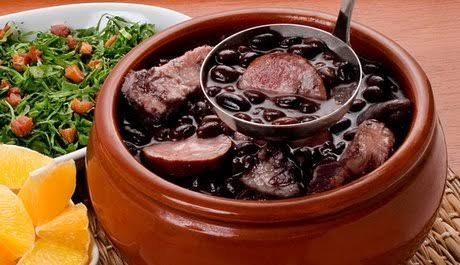

Feijoada

Description
Feijoada is a Brazilian black bean stew enriched with a variety of smoked and fresh meats,
creating a rich and savory flavor. Served with white rice, collard greens, and farofa, it's
a beloved dish that reflects the diverse culinary influences of Brazil, often enjoyed at festive gatherings.
Ingredients
- 1 pound (450g) black beans
- 1/2 pound (225g) pork shoulder, diced
- 1/2 pound (225g) smoked sausage or linguica, sliced
- 1/2 pound (225g) smoked pork ribs
- 1/2 pound (225g) bacon, chopped
- 1 onion, finely chopped
- 4 cloves garlic, minced
- 2 bay leaves
- 1 tablespoon olive oil
- Salt and pepper to taste
- Water
Steps
- Rinse the black beans thoroughly and soak them in water overnight. Drain and set aside.
-
In a large, heavy-bottomed pot, heat olive oil over medium-high heat.
Add the bacon and cook until it becomes crispy.
Add the diced pork shoulder, smoked sausage, smoked pork ribs, and, if using, the diced carne seca.
Sauté until they are browned on all sides.
- Add the chopped onions and minced garlic to the pot. Cook until the onions become translucent and fragrant.
-
Add the soaked black beans to the pot. Pour in enough water to cover the beans and meats by about 2 inches.
Stir in the bay leaves.
-
Bring the mixture to a boil, then reduce the heat to low.
Cover the pot and simmer for about 2 to 2.5 hours, or until the beans are tender and the meats are cooked through.
Stir occasionally and add more water if needed to keep the beans covered.
-
Season the feijoada with salt and pepper to taste. Remove the bay leaves.
Serve the feijoada hot with white rice, farofa, and collard greens. Garnish with orange slices if desired.
Feijoada is a hearty and flavorful Brazilian dish traditionally served at gatherings and celebrations.
It's a true representation of Brazilian cuisine, and the combination of beans and various meats creates a delicious and satisfying meal.
Enjoy!